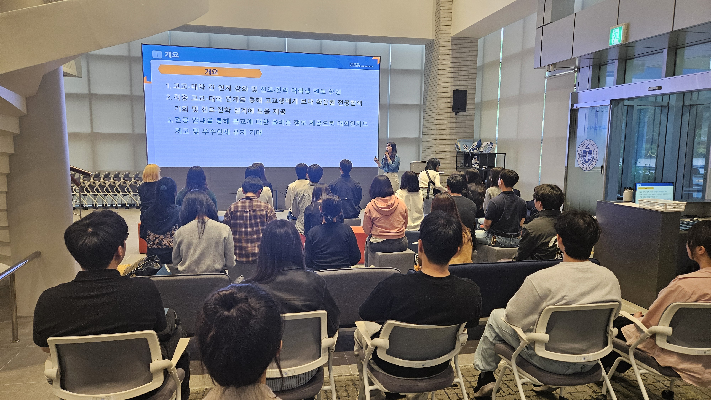

News
- 대학/대학원

- 연구/산학
- 입학안내
- 대학생활
- 인천대소식
- 대학소개
- 이용안내
- 인천대뉴스
- 공지사항
- 계약
- 대학홍보관
- News
- Research
- People
- Weekly Newsletter
- Monthly Newsletter
- 해명자료
인천대소식
인천대뉴스
News
총 1265개의 게시물이 있습니다.
-
인천대학교 INU그레이트북스(GreatBooks)센터, 인천 결마루미래학교와 함께 ‘읽·걷·쓰 기반 고전 명저 그레이트북스 프로그램’ 운영
-
인천대학교 서명지 교수 연구팀, 합성생물학 및 정밀발효 기반 산업 미생물 활용 고부가 항산화 소재인 박테리오루베린 세계 최초 생산 성공
-
인천 신사업창업사관학교 '송도시장 플리마켓' 성황리 종료… 졸업기업 판로 확대 기여
-
인천대학교 대학일자리플러스센터, 「2025년 상반기 전공별 진로설계캠프」 성료
-
인천대학교 “인문사회 융합인재양성사업” 다양한 갈등 극복을 위한 포용사회 구축 컨소시엄 주관기관 선정
-
인천대, ‘고교교육 기여대학 지원사업’ 총 10회, 9년 연속 선정
-
인천대학교 패션산업학과 2025년도 제34회 졸업 패션쇼 개최
-
'법과 자유만남' 통해 SSG 랜더스필드 으쓱이존 점령한 인천대 법학부
-
인천대 탁구부 대회 3연승 영구기 소장
-
2025년도 한국상품학회 대한민국 상품대상 및 춘계학술대회, 국립인천대학교에서 성황리에 개최
-
인천대학교 이인재 총장 직원 ‘소통동행 비전설명회’ 개최
-
대학축구 U리그 시축하는 이인재 인천대 총장
-
인천대 해양학과 석사과정 김서영 ‘여름철 제주도 항구지역 강력한 온실기체 발생 가능성 제시'
-
인천대학교, `2025년도 일학습병행 사업설명회` 성황리에 종료
-
인천대 법학부, 2년간 이어진 저명인사 릴레이...진로‧비전‧공감의 장 열었다
-
인천대학교 대학일자리플러스센터, '2025 국민취업지원제도' 대면 홍보 행사 4~6월 운영
-

인천대 공연예술학과 3학년 정기공연, 연극 <리어> 개최
-

인천대학교 입학관리과, 고교생 대상 진로·진학 멘토단 ‘INU 전공아웃리치단’ 임명식 개최
-
인천 신사업창업사관학교, 예비 소상공인 기초 역량 강화 교육 성공적 마무리
-
이광용 아나운서, 인천대 법학부 전공 진로특강 4번 타자 끝내기 홈런치다


콘텐츠 담당부서 및 연락처
 교무과
교무과
 032-835-9220
032-835-9220